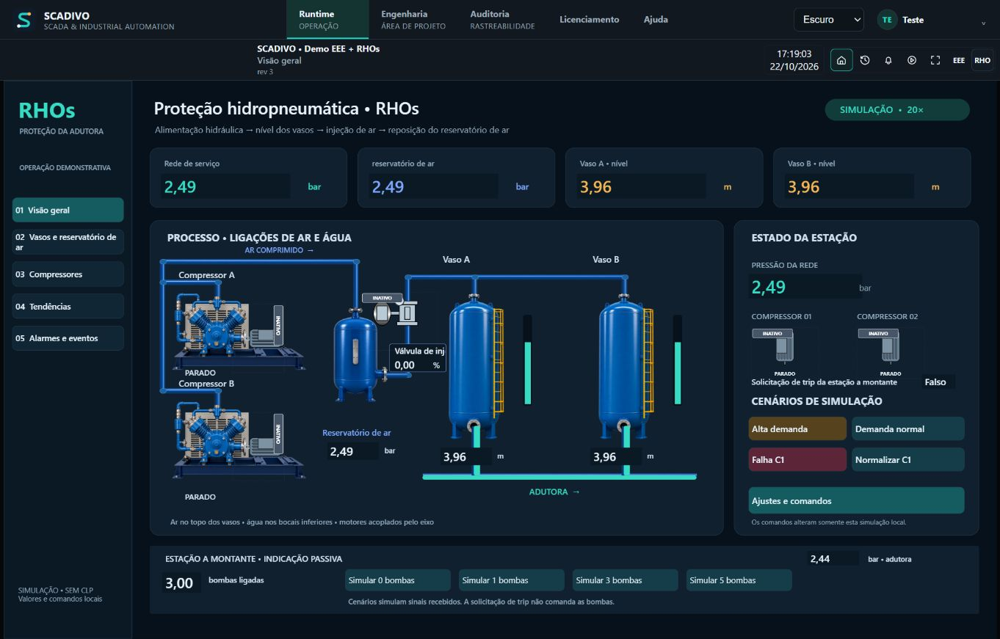
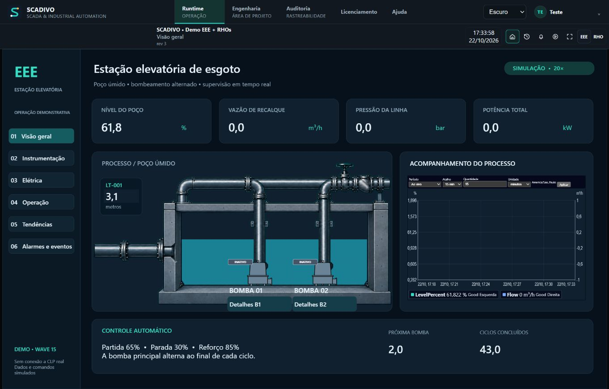
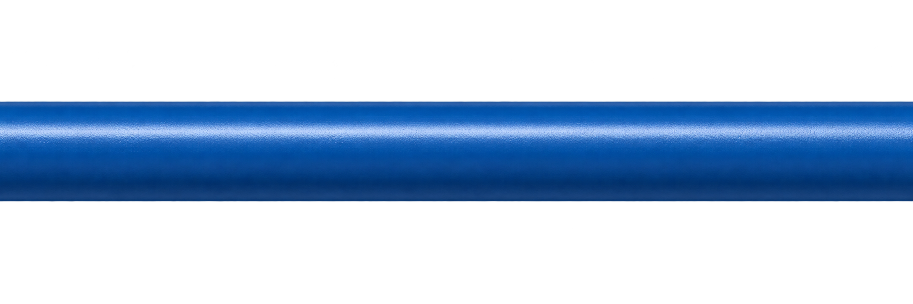
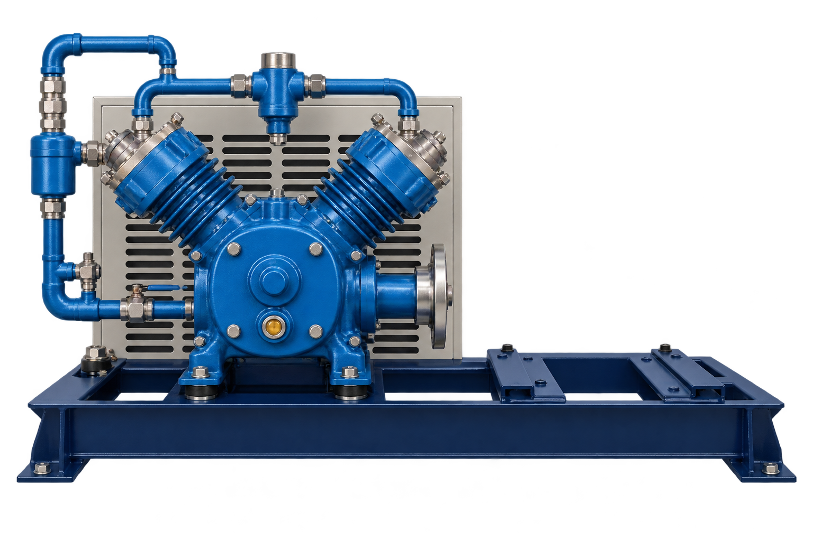
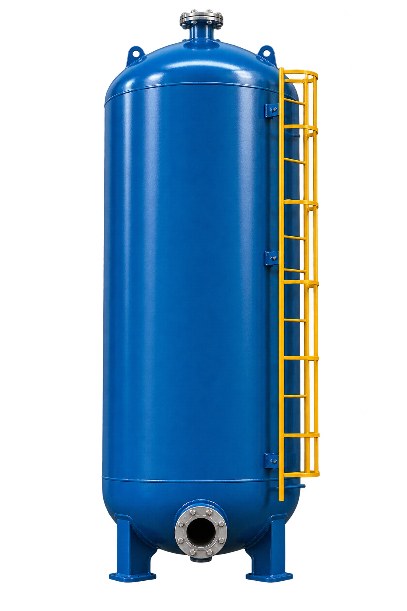
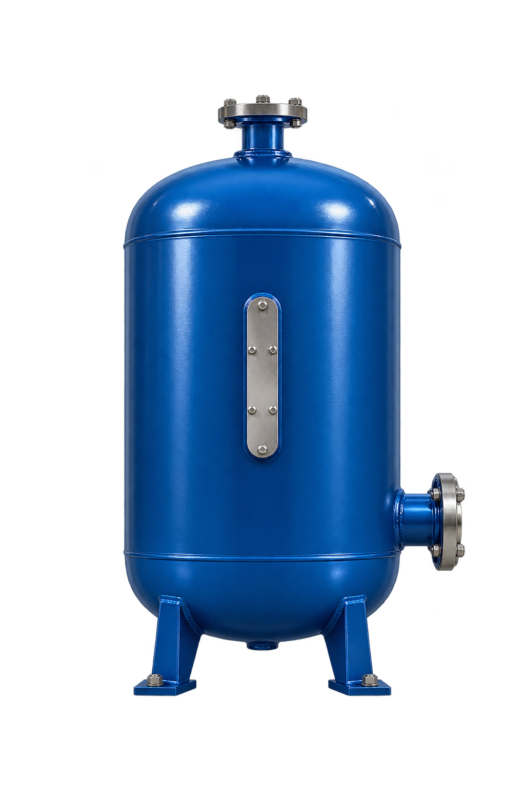

Engineering in one project
Organize tags, data sources, alarms, events and screens in folders and subfolders. Edit objects in bulk with CSV and move the application in a project package.
SCADA & AUTOMATION AT ANY SCALE
Build, connect and operate automation applications in one system. From a home to a complex plant, your project's scale and logic are what change. Access engineering and operations in a browser, locally or over the web.
Up to 200 free tagsStart small. Grow with the same system.
WHAT THE SYSTEM DOES
Connections, tags, screens, scripts, alarms, history and asset analytics belong to the same platform. Integrators, system designers and operations teams work with a common structure sized for each application.
Organize tags, data sources, alarms, events and screens in folders and subfolders. Edit objects in bulk with CSV and move the application in a project package.
Follow values, signal quality and equipment states. Execute commands and adjust process values according to each operator's permissions.
Create process screens, popups, animations and reusable dynamos. Combine images and tag-linked objects, with desktop presentation and dedicated mobile screens.
Configure conditions, priorities and messages. Follow alarms, acknowledgements and operational events to understand what happened and in what order.
Compare real-time curves and historical periods. Review recorded values, quality and timestamps to investigate deviations and build operational reports.
Integrate PLCs, meters, connected devices and other data sources. Use tag gateway routes to share values across connections and protocols.
ADVANCED CAPABILITIES
Beyond supervision, SCADIVO provides tools to automate logic, review the past and design higher-availability architectures.
SCADIVO INTELLIGENCE
Link equipment, process stages and signal profiles (tags) to review coverage, metrics and comparisons based on recorded data—with formulas, units, time windows and data sources identified. When data is missing, the system reports the limitation instead of estimating a value.
From simple calculations to complex sequences: write Python for server automation and client-side visual behavior. Work with events, timers, tags and editor validation.
Return to a point in the process and view historical values on the process screen itself. Investigate events with the visual context of operations, in read-only mode.
Build a redundant architecture, monitor node availability and plan Runtime continuity. Configure the capability for your project's license and topology.
Roles and permissions separate viewing, commands, engineering changes and administration. Audit records provide traceability for operational actions.
Prepare engineering changes, save revisions, publish and activate the version that will run. The project keeps its objects, references and folder structure together.
Protocols and integrations for residential, building and industrial automation through SCADIVO data sources.
A PLATFORM THAT SCALES WITH YOU
SCADIVO is one system. You use the same engineering and operational foundation; what changes is the number of signals, integrations, screens and application complexity.
Bring utilities, water, energy and connected equipment into one organized view of the home.
Bring together systems such as HVAC, pumping, tanks and energy, with alarms and history.
Model processes and utilities, and supervise equipment, events and trends in more complex operations.
For automation integrators, system designers, machine builders, maintenance teams, facility managers and process operators. Architecture and capacity follow the project.
LOCAL, WEB AND EDGE COMPUTING
Choose where to host SCADIVO and how to access the application. The server runs the process; the browser provides access to engineering and Runtime. Web access does not require cloud hosting.

Application, connectivity, scripts and history in the environment selected for your project.
The same platform and project model. Deployment follows your operation's networking, hardware and availability requirements.
DEMONSTRATION ENVIRONMENTS
The EEE and RHOs applications show how different processes can be represented and supervised in SCADIVO. They are simulated demonstrations, with no PLC communication.

Levels, submersible pumps, duty alternation and process flow in a simulation scenario.
Open Runtime · EEE first



Compressor A Vaso A Vaso B RAC COMPRESSED AIR → VESSELS → RACHydropneumatic reservoirs, compressors, air injection and an air receiver. Explore the process, trends, alarms and mobile screens in a simulated application.
Open unified demo · select RHOsOpen Runtime without registering. Credentialed guests can explore engineering and experiment with screens and scripts; the published demo application is protected against saving and activating changes.
START FOR FREE
Start your application with up to 200 free tags, with no runtime time limit. When you need more capacity, upgrade licensing and continue with SCADIVO using the same engineering and operational foundation.
Tag capacity, concurrent access and capabilities such as redundancy and Intelligence are defined by the license. The purchase and automatic issuance portal is in preparation; this site does not yet process payments.
BEFORE YOU START
Tags are application variables, such as temperature, level, pressure, pump state or a command. The free tier covers applications with up to 200 tags. For a larger application, choose a license with the capacity you need.
No. SCADIVO is the same platform for residential, building and industrial applications. Your project grows with more tags, screens, data sources and logic; hardware capacity, architecture and licensing grow with it.
No. The browser interface can access a server on the same computer, on the local network or on remote infrastructure. Processing runs in the environment chosen for the project; cloud hosting is one deployment option.
Yes. Deployment covers Windows, Linux and Docker. For edge computing, the device must meet system and protocol requirements, including CPU, memory, storage and communication interfaces.
Scripts implement calculations, sequences and event responses on the server, as well as visual behavior and animations on the client. The editor provides validation, and scripts use the APIs and permissions exposed by SCADIVO.
No. EEE and RHOs use simulations to demonstrate the system through actual Runtime screens. In an installation, communication is configured through the data sources and drivers appropriate to the project's equipment.
START EXPLORING